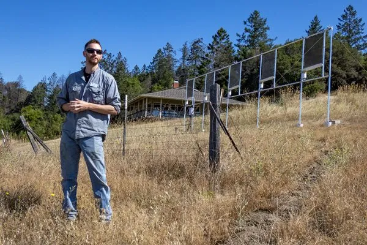
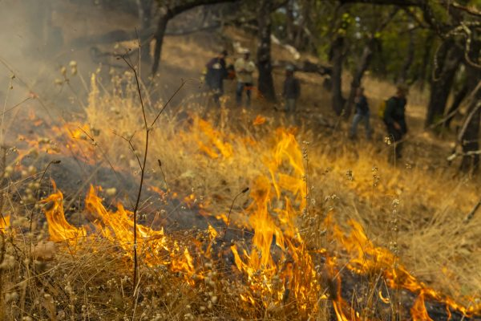
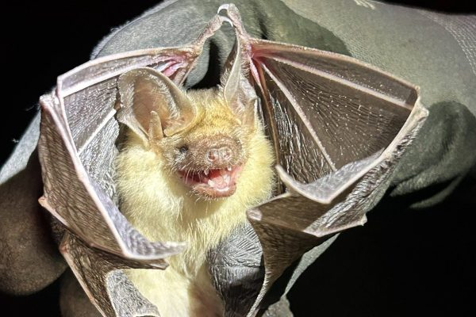
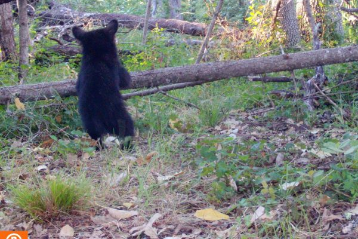

Our Frontline Against a Changing Climate
What is a scientific field station? These sites monitor long-term changes in our environment, detecting shifts and trends. But there’s more to it than that… (7 min. read)
Read More →
If You Must Fence, Be Wildlife-friendlier
Humans have been using fences for nearly 10,000 years. By now, we should have learned how to construct fences in a way that does not harm wildlife or obstruct the movement of resources. But have we? Pepperwood explores these issues and demonstrates how we can do better... (15 min. read)
Read More →
Why We Need Prescribed Burns
How to promote community while building wildfire resilience through stewardship with prescribed burns and good fire. (15 min. read)
Read More →
🦇 Batting for Biodiversity: Bat Monitoring at Pepperwood
Did you know that over half of North America’s bat species are facing significant decline? Using innovative audio tech we’re monitoring the health of our bat populations… (9 min. read)
Read More →
A Bonfire with a Greater Purpose
Discover the benefits of pile burning! Learn how to reduce fuels, promote soil health and native vegetation, and how to boost forest resilience! (4 min. read)
Read More →